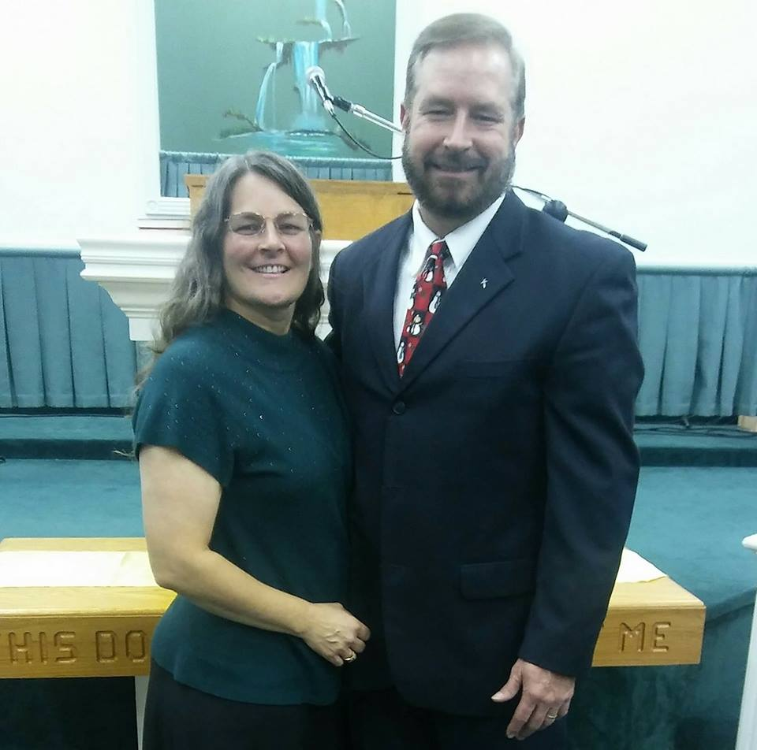

x
Service Times
Sunday School 10:00am
Sunday Worship 11:00am
Wednesday Bible Study 7:00pm
Pastor Stephen Pace

Pastor Pace has been faithfully serving Twinland Missionary Baptist Church for 15 years.
Doctrinal Statement
We believe that love one for another as Jesus loves the believer manifests our discipleship, proves our love for God and symbolizes our authority as New Testament churches. Love is therefore the great commandment of the LORD Jesus Christ upon which all others are dependent (Matt. 22:35-40; John 13:34, 35; John 15:12; 1 John 4:7-21; 1 John 5:1-3; Rev. 2:4, 5).
We believe in the infallible, verbal inspiration of the whole Bible and that the Bible is the all-sufficient rule of faith and practice (Psalm 119:160; 2 Tim. 3:16, 17).
We believe in the personal triune God: Father, Son, and Holy Spirit, equal in divine perfection (Matt. 28:19).
We believe in the Genesis account of Creation (Gen. 1; 2).
We believe that Satan is a fallen angel, the archenemy of God and man, the unholy god of this world, and that his destiny is the eternal lake of fire (Isa. 14:12-15; Ezek. 28:11-19; Matt. 25:41; 2 Cor. 4:4; Eph. 6:10-17; Rev. 20:10).
We believe in the virgin birth and sinless humanity of Jesus Christ (Matt. 1:18-20; 2 Cor. 5:21; 1 Peter 2:22).
We believe in the deity of Jesus Christ (John 10:30; John 1:1, 14; 2 Cor. 5:19).
We believe the Holy Spirit is the divine Administrator for Jesus Christ in His churches (Luke 24:49; John 14:16, 17; Acts 1:4, 5, 8; Acts 2:1-4).
We believe that miraculous spiritual manifestation gifts were done away when the Bible was completed. Faith, Hope and Love are the vital abiding Spiritual Gifts (1 Cor. chapters 12-14).
We believe that Man was created in the image of God and lived in innocency until he fell by voluntary transgression from his sinless state, the result being that all mankind are sinners (Gen. 1:26; Gen. 3:6-24; Rom. 5:12, 19).
We believe that the suffering and death of Jesus Christ was substitutionary for all mankind and is efficacious only to those who believe (Isa. 53:6; Heb. 2:9; 1 Peter 2:24; 1 Peter 3:18; 2 Peter 3:9; 1 John 2:2).
We believe in the bodily resurrection and ascension of Christ and the bodily resurrection of His saints (Matt. 28:1-7; Acts 1:9-11; 1 Cor. 15:42-58; 1 Thess. 4:13-18).
We believe in the premillennial, personal, bodily return of Christ as the crowning event of the Gentile age. This event will include the resurrection of the righteous to eternal heaven, and the Millennium will be followed by the resurrection of the unrighteous unto eternal punishment in the lake of fire and that the righteous shall enter into the heaven age (John 14:1-6; 1 Thess. 4:13-18; 2 Thess. 2:8; Rev. 19; Rev. 20:4-6; Rev. 20:11-15; Rev. 21:8).
We believe that the depraved sinner is saved wholly by grace through faith in Jesus Christ, and the requisites to regeneration are repentance toward God and faith in the Lord Jesus Christ (Luke 13:3-5; John 3:16-18; Acts 20:21; Rom. 6:23; Eph. 2:8, 9), and that the Holy Spirit convicts sinners, regenerates, seals, secures, and indwells every believer (John 3:6; John 16:8, 9; Rom. 8:9-11; 1 Cor. 6:19, 20; Eph. 4:30; Titus 3:5).
We believe that all who trust Jesus Christ for salvation are eternally secure in Him and shall not perish (John 3:36; John 5:24; John 10:27-30; Rom. 8:35-39; Heb. 10:39; 1 Peter 1:5).
We believe that God deals with believers as His children, that He chastises the disobedient, and that He rewards the obedient (Matt. 16:27; Matt. 25:14-23; John 1:12; Heb. 12:5-11; 2 John 8; Rev. 22:12).
We believe that Jesus Christ established His church during His ministry on earth and that it is always a local, visible assembly of scripturally baptized believers in covenant relationship to carry out the Commission of the Lord Jesus Christ, and each church is an independent, self-governing body, and no other ecclesiastical body may exercise authority over it. We believe that Jesus Christ gave the Great Commission to the New Testament churches only, and that He promised the perpetuity of His churches (Matt. 4:18-22; Matt. 16:18; Matt. 28:19, 20; Mark 1:14-20; John 1:35-51; Eph. 3:21).
We believe that there are two pictorial ordinances in the Lord's churches: Baptism and the Lord's Supper. Scriptural baptism is the immersion of penitent believers in water, administered by the authority of a New Testament church in the name of the Father, Son, and Holy Spirit. The Lord's Supper is a memorial ordinance, restricted to the members of the church observing the ordinance (Matt. 28:19, 20; Acts 8:12, 38; Rom. 6:4; 1 Cor. 5:11-13; 1 Cor. 11:1, 2, 17-20, 26).
We believe that there are two divinely appointed offices in a church, pastors and deacons, to be filled by men whose qualifications are set forth in Titus and 1 Timothy.
We believe that all associations, fellowships, and committees are, and properly should be, servants of, and under control of the churches (Matt. 20:25-28).
We believe in freedom of worship without interference from the government and affirm our belief in civil obedience, unless the laws and regulations of civil government run contrary to the Holy Scriptures (Rom. 13:1-7; 1 Peter 2:13-15).
We believe the Bible definition of marriage is the union between a man and a woman (Gen. 2:21-24; Matt. 19:4-6; Mark 10:6-9; 1 Cor. 7:2-4; Eph. 5:22-31).